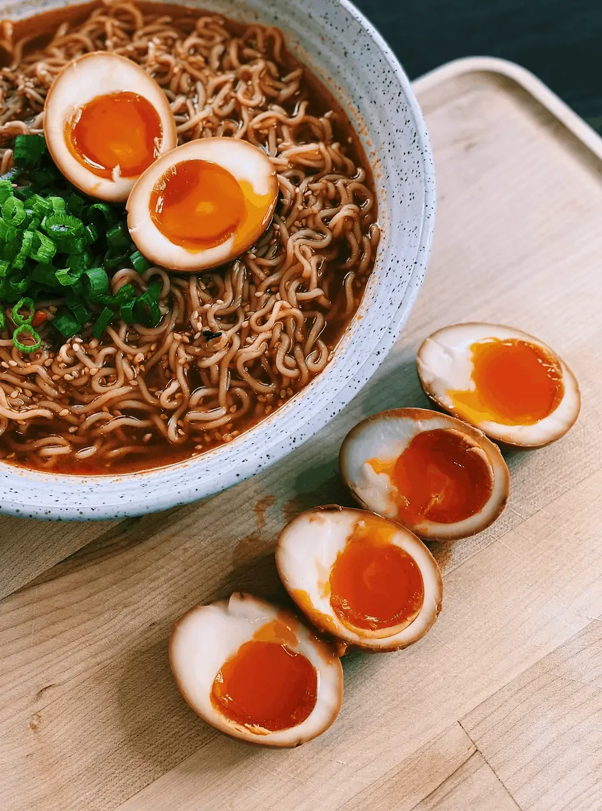

Ramen Egg

Known as Ajitsuke Tamago or Ajitama in Japanese, Ramen Eggs are delicious as a topping on ramen or enjoyed as a snack.
Ingredients
- 8 eggs
- 1/2 cup soy sauce
- 1/2 cup mirin
Steps
- Boil pot of water. Add eggs once boiled. Cook for 8 minutes.
- Put cooked eggs into cold bath for at least 3 minutes.
- Peal shell and add into soy sauce and mirin mixture.
- Refrigerate for >4 hours or overnight.
Back to Homepage